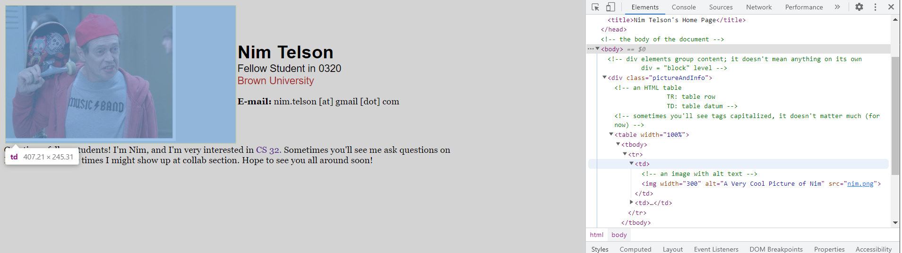
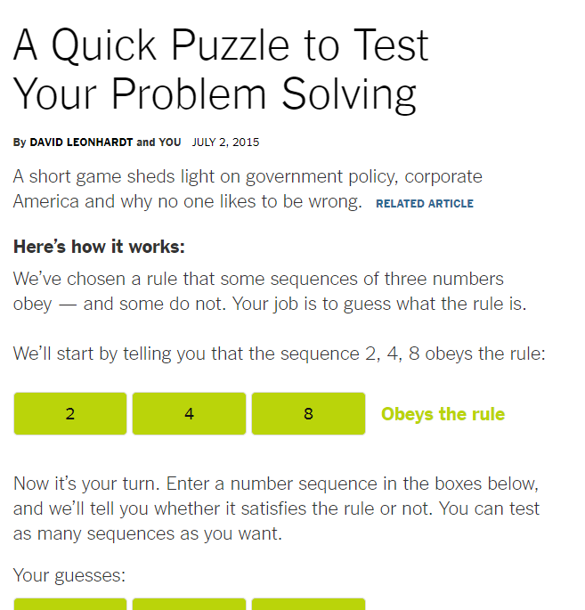
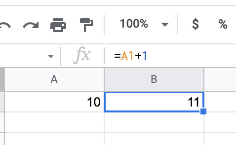
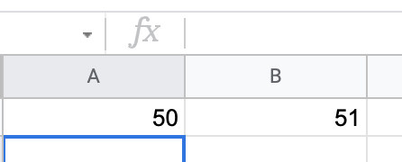
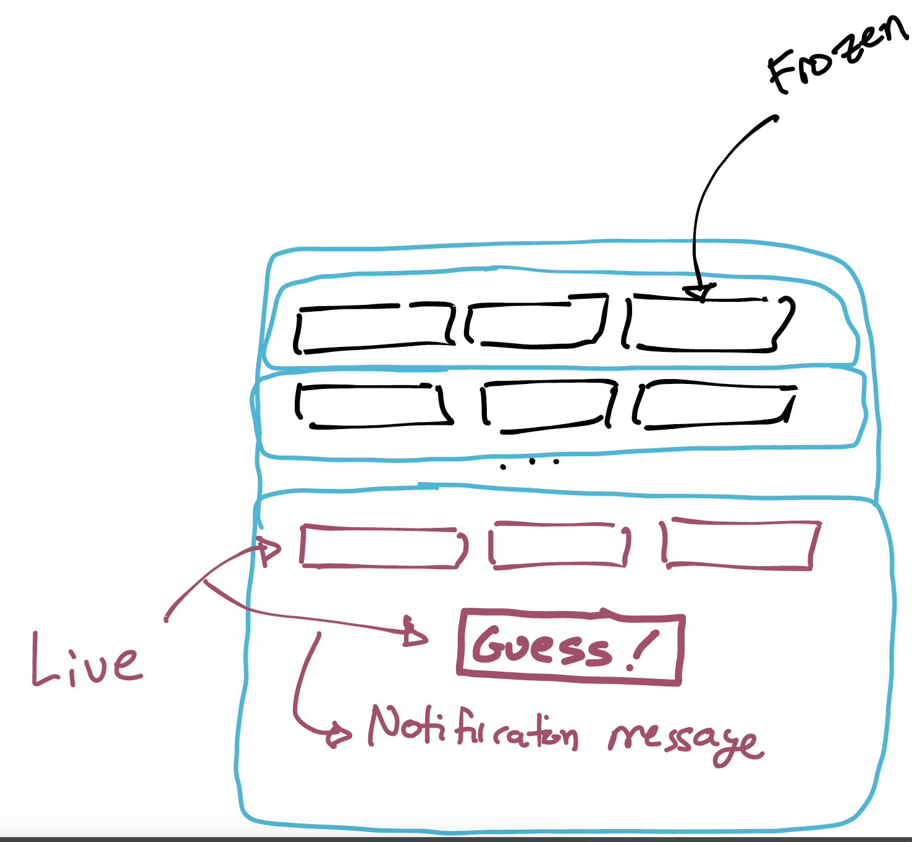

Webapps: HTML, CSS, and TypeScript¶
We're going to start learning how to write web applications. In time, you'll have a working front-end web application, which you'll use to query the backend server you're finishing up now.
Please be aware that these notes:
- cover multiple class meetings (and thus may change, as I prepare for class each day);
- contain supplemental material which may not be covered in class; and
- meant to be accompanied by two examples: the Providence Weather app and the NYT puzzle example, which contain many comments for your reference.
We're going to start building that final example in these notes, but won't have time to completely finish it.
Static HTML and CSS Basics¶
Let's start by looking at a student's website. The site is hosted here. Naturally, I got permission before using one of your fellow student's webpages. The style is rather outdated, but it suffices as a first intro to these concepts.
This website uses three files:
- an HTML file, which defines the content of the page (index.html);
- a CSS File, which defines the styling of the page (styles.css); and
- an image file with a picture of the student (nim.png).

There's no "app" here; the site is static. Put another way, it's just unchanging content for the browser to format and present for us to see.
HTML: The Content¶
Notice that the structure of HTML is treelike. Tags open and close elements in the document. There's some metadata, but largely the document describes visible content and the structure of that content.
If you're used to editing documents via Google Docs or MS Word, you might be wondering where the formatting information comes from. Websites usually separate out content from styling, meaning that the HTML won't say that a certain word should be shown in a particular font, or aligned in a particular way. Instead, any context needed for styling to be done is specified by...
CSS: The Styling¶
CSS files say how to style elements of a webpage. Because the author of this page gave the uniName class to "Brown University", this style declaration will apply:
.uniName {
color: brown;
font-family: Trebuchet, sans-serif;
font-size: 18px;
font-weight: normal;
}
The dot before uniName means that the style is meant to apply to any element on the page with uniName as its class. This is called a CSS selector; there are lots more that select elements by their id or other properties.
The result of this separation is that the HTML document can focus on content and context, and leave styling aside. Yes, it's possible to embed your CSS inside the same file, and there are also frameworks that combine the two in a useful way. But the convention we'll follow to start with is to split the two into different files.
Beware: styling isn't easy.
You might initially be inclined to dismiss styling as a minor part of a webapp. Don't. You will spend a surprising amount of time on styling before the semester is over. Just because CSS isn't obviously a "programming language" doesn't mean it lacks for complexity. More on this in the near future.
Viewing HTML Source¶
By default, your browser will render the HTML file, rather than showing its raw form. To see the HTML itself, you'll need to view source. Often there's a right-click menu option for this, but if not there's usually a key combination to press:
- In Safari:
Command + Option + U; - In (Windows) Firefox:
Control + U; - In (MacOS) Firefox:
Command + U.
Inspecting Elements¶
CSS files also have significant influence over how elements are positioned on the page. It can be useful to see where boundaries between divs and other elements actually are. This is best done in a browser's page-inspection tool. You'll often find this under "Web Developer Tools" or "Dev Tools" or a similarly named menu. Here are some key combinations:
- In Safari:
Command + Option + I(and click on theElementstab); - In (Windows) Firefox:
Control + Shift + I(and click theInspectortab); - In (MacOS) Firefox:
Command + Option + I(and click on theInspectortab).
Notice that when I mouse over the first column in the table, my browser is highlighting the on-page position of that column:

There are better ways of formatting this sort of data than tables. I took this from a webpage written more than a decade ago. However, HTML tables would be a great way to start displaying rows of tabular data on a webpage!
'Sources' isn't updated.
Make sure you're looking at Elements or Inspector, not Sources. Once we start working with pages that change dynamically, Sources only shows the starting HTML (the source loaded in the file) without updates that are actually displayed.
Adding Dynamic Behavior¶
Neither HTML nor CSS alone suffice to build a good web application. We need a way to add dynamic behavior to the page, and to do that, we probably want a programming language. JavaScript is the most popular, and what most browsers optimize for. Fortunately, we've been using TypeScript already! We'll keep using it for web programming.
We could proceed to build a dynamic website with just TypeScript. But there are some annoying patterns that come up there; instead, we'll be using the React framework this semester. React is a web framework for JavaScript and TypeScript. We'll use it to make web development a bit easier. You will find the React docs useful. This is especially true for hooks which are how you manage state in React.
A Website I Liked¶
The New York Times website had a puzzle a few years back that I love to use in class. It went something like this:

The Problem¶
The page is paywalled. Although Brown provides access through your logins, it's kind of a pain to set up under time constraints. So, while you should definitely try the NYT's version if you can, let's build our own. In fact, I've already built one!
This is an example of a webapp with both a front end and a back end. The front-end piece is what you see on the webpage, and all the dynamic functionality is there. The backend (in this app, anyway) is just a database where I keep track of everyone's sequences, and the results the app gave you.
Let's try it out. I didn't implement the "I'm ready to guess" part yet, but once you have a guess, write it down and stop.
Think, then click!
The rule is "any non-decreasing sequence of three numbers." Is that your guess?
Perhaps not! The NYT reports that the majority of people who've tried the puzzle made their first guess before ever receiving a false response.
What does that have to do with software engineering? This is an example of confirmation bias; we humans tend to favor examples that meet our expectations. But without first seeing some false results, how would you really build confidence in your guess? (Maybe any sequence worked!)
By the way, this shows an example of how cognitive bias can impact our testing. It's quite easy to see a lot of true responses and get complacent...
Building an App the Hard Way¶
Before showing you React, I want to give you an example of how things work without a web framework to help out. And I want to showcase our agent here, and my process when I'm using it for this kind of prototyping. We're likely to run into some snags, and you'll see me resolve them.
Because this will be done live, I can't predict what will happen ahead of time. Still, remind yourselves of these three bits of advice from the AI gearup:
- Specify the end goal.
- Specify he language/infrastructure.
- Specify the output/input format.
In this case, I want to build an example web application in TypeScript, without any frameworks. The application should have state in it: a counter on the page that the user clicks a button to increment. There's no real input/output format in this situation. We'll also want to prompt the agent to ask us questions along the way.
See the lecture capture for specifics on this exercise.
Using React¶
Let's try to do the same thing, but with React. I'll create a new folder and new conversation. Because there are a few different ways to run a React program, I'll specify Vite because that's what we use this semester.
See the lecture capture for specifics on this exercise.
Building Something Bigger¶
I've put a draft of the puzzle in the live code repository here.
You can find the HTML here. There are a couple of new tags in the HTML, but they're just more semantic grouping tags, like section etc. We'll focus on the code today.
One thing is worth noting: the CSS has only two declarations. These correspond to the formatting cues assigned to correct and incorrect sequences in the history:
We could make the page a lot better-looking by doing more with CSS styling. But this is meant to be an example focused on the dynamic behavior only, so we'll move on from there.
React and Reactivity¶
Most Languages¶
Consider what happens when I assign a value in JavaScript (or Java, or C, or most programming languages):
At this point, x contains the value 10 and y contains the value 11. But suppose I then update the value of x to 50:
What happens to the value of y?
In most languages, it remains set to 11. That x + 1 is only computed once, at the time the line executes. And, at that time, the value of x was 10. So what if it's now 50? It was 10 when the assignment to y happened.
Another philosophy¶
Let's set up something similar in Google Sheets:

The cell A1 is set to 10, and the cell B1 has been assigned A1+1. Like before B1 has the value 11.
But in this setting, if I go and change A1 to 50, the value of B1 automatically updates to 51:

Languages where assignment works like it does in Google Sheets are called reactive, because values change in reaction to changes in their dependencies.
At this point, you may have two questions:
Q: Is reactivity fundamental to the language, or can you build reactivity atop normal assignment? A: You can, with effort, implement reactivity in languages where it's not the default behavior.
Q: Where is reactivity natural, outside of a spreadsheet program? A: Reactivity makes sense in more domains than you might think.
Using Reactivity¶
Here are a few examples.
- Signal propagation in electrical engineering
- Updating a database view in real time
- Monitoring a system (either in production or for debugging)
- Physical interfaces like a steering wheel or thermostat
One More Example¶
In a networked chess application, the state of the board on screen should automatically reflect the programmatic board state as it changes based on moves made. This is very straightforward to implement in React, because the program only needs to update the board's data structure and then React handles re-drawing the screen.
How do we get reactivity?¶
All of the above are something we could, in principle, build ourselves in vanilla JavaScript (or some other language). Unfortunately, as the application grows in complexity, this becomes tougher to do, and there are efficiency challenges.
For example, if we wanted to use reactivity in our web frontend applications, it would be good to avoid updating the entire webpage every time a small value changed. We'd like to update only the places in the DOM that really need updating. Making updates accurate and efficient is hard work. React gives us (an approximation of) reactivity for free. I say "approximation" because TypeScript's single-threaded model means that state updates have to be queued, they are not seen immediately.
What does React Do?¶
React provides two useful features (among others):
- React manages your front-end app's state centrally, and when it detects a state change it propagates that change to a virtual copy of the page. The actual page then only gets updated when it actually needs to be changed. This can improve efficiency of complex apps. To make this work, you usually want to manage all state through React.
- React gives us a nice way to align the visual layout of the app with the program. Concretely, a React component is a TypeScript function that returns a special kind of object that resembles HTML: a JSX expression. In effect, JSX is HTML with holes in it where we can plug in the result of running TypeScript code.
Together, these features mean that we can let React manage updating the DOM; we just need to update the state that React can see.
JSX
Always keep in mind that a React function component must return a JSX expression. This might be plain HTML, but almost always it's got some JavaScript being evaluated inside squiggle-braces.
We're also using Vite, a development server for React applications. This makes it easier to get started. Notice that we're using a lot of helper libraries! This is normal in much of web development, and we want to get more practice managing this.
Components
React components will either be classes or functions. We don't use "class components". They are outdated, from the early days of React. You'll still see them referenced online, though. The React team strongly suggests that new development use functional components instead, though. We follow their advice, and so should you. Use function components.
What are our components for this application?¶
After you ignore all of the extraneous content, the NYT puzzle is pretty simple:
- 3 input boxes invite you to enter a trio of numbers.
- Once you've entered numbers, you click a button to check whether those numbers are in the hidden set of sequences.
- The 3 input boxes become read-only and get colored red or green depending on success or failure.
- A new trio of inputs appears.
So, for our graphical components, we probably need:
- input boxes and a submission button; and
- a notion of "attempt": one current attempt, and 0 or more past attempts.
That's enough to get a very rough approximation of the puzzle, which is good enough for me!
I like to draw out a prototype UI, and circle different regions that represent important grouping in the application. E.g.:

JSX¶
React component functions return JSX, rather than standard TypeScript, which is why the file extension is now .tsx rather than .ts. React automatically renders whatever these functions return into HTML.
All these components except App take properties. This is either a single argument, props, that represents information passed down from parent components, or a collection of variables that do the same.
Running¶
From the console, I'll run npm run start. Because I'm using React with Vite, it will give me output like this:
VITE v4.4.9 ready in 1240 ms
➜ Local: http://localhost:5173/
➜ Network: use --host to expose
➜ press h to show help
If I then go to http://localhost:5173/oct07, I can view the app. (By default, it would be served at localhost:3000, but I've configured it to add oct07 so that I could deploy it where I did, rather than the root of my Github pages page. We won't be doing deployment today.)
Revisiting Configuration¶
Because different projects may have different configurations, I want to revisit this.
We've got a file called package.json and another called tsconfig.json. We've seen these before, but as a reminder they control (respectively):
- the project's metadata and dependencies; and
- how TypeScript should compile (e.g., which version of JavaScript it should emit, whether it should interoperate with raw JavaScript, etc.).
There's also a very large file, package-lock.json. This gives the low-level details of how dependencies were resolved, even implicit ones, and helps ensure a consistent build. All three of these should be pushed to Github.
On the other hand, node_modules is where the dependencies have been downloaded. These are often large, and should not be pushed to Github.
You may notice some other configuration:
vite.config.jsconfigures Vite.jest.config.jsconfigures Jest.
That's a lot of moving parts! Front-end development tends to have more pieces, but just keep in mind:
- Browsers understand JavaScript;
- TypeScript adds types, and gets compiled to JavaScript;
- React is a framework that makes building applications easier; and
- Vite is a development server meant to make building React apps easier.
Application state¶
The App component is the entry point into a create-react-app program. Let's start by adding a NewRound component:
This changes nothing, but it raises the question: how do we get the NewRound component to do what we want? Our application has some state. What does the state look like?
We'll need at least:
- the state of each text input;
- some record of past guesses; and (if we want to get fancy)
- maybe some text state for showing error messages and so on.
Let's focus on the record of past guesses. What's the right component for that record to be kept in? If we keep the record in one big array, it's the App component. We don't just want to add a global variable for this, though; we want to enable React to register our updates so it can efficiently flow those updates into the UI. For this, we'll use a hook (see this week's lab for more information), and we'll pass both the value and the setter function to the NewRound component. We'll also tell the NewRound component about how to update the notification text
function App() {
const [guesses, setGuesses] = useState([]);
const [notification, setNotification] = useState('');
return (
<div>
<NewRound setGuesses={setGuesses}
setNotification={setNotification} />
{notification}
</div>
);
}
The squiggly braces contain JavaScript; the result of evaluating that JavaScript gets substituted into the JSX. As a result, the NewRound component will have access to the setter for guesses, and thus have the ability to update the record.
Having referred to a NewRound component, we probably ought to do something in the corresponding function (which is, at the moment, empty except for a <div>). We've got to do a few things:
- We need a place for the state of those 3 text inputs to go. We'll use another
useStatehook for this. - We need a place for the inputs to go, and the guess button.
- We need to take in some props---at minimum, a way to change the notification message.
See the completed livecode for details. Much of class will be a code-dive exercise with an opportunity to ask questions. Pay special attention to...
- ...how state is declared, updated, and accessed. Never modify a state variable directly; always use the setter provided by React, and don't expect the setter to execute right away.
- ...how the components refer to each other, forming a nested structure. The structure of the program echoes the graphical structure. If you're ever feeling "lost" in React, draw the picture of how the components should relate to each other.
React state updates are asynchronous!
Try adding a console write immediately after a state update (here's a snippet modified from the full code below):
function ControlledInput(props) {
return (
<input value={props.value} onChange={(ev) => {
props.setValue(ev.target.value);
console.log(props.value);
}
}></input>);
}
The console.log will print the old value, because React hasn't yet had a chance to run the update. In general, don't expect React state updates to take effect until after the currently running code has ended. (We'll talk more about this in preparation for your next sprint.)
Testing in React¶
We'll be using and requiring Playwright for Mock and future sprints. You're strongly encouraged to use it on your term projects as well, since that's what we can best support. Playwright is a great library for scripting front-end tests. There's a guiding principle (quoted from a different testing library) that we'll follow for front-end testing:
The more your tests resemble the way your software is used, the more confidence they can give you.
Broadly, we're going to focus on a more heavy-weight kind of testing on the front end that resembles the integration tests you wrote for Server. We'll call this end-to-end testing, because it can potentially test the entire application. You might think of it as a kind of user-focused system testing.
Contrasting vs. Unit Testing¶
Unit testing still has a (major) place in our testing lives. It's still useful to test narrow units of code. But why do we unit test? It isn't because of some crude rule like "we should test every line!" but rather because it's important to have confidence about interface boundaries in your application. These boundaries exist at many different levels:
- individual public helper functions used throughout an application that developers (often you) invoke elsewhere, relying on their specific behavior when doing so;
- the behavior of frontend-backend communication (like your API server in Sprint 2) and other connections between large components that developers (often not you) rely on;
- the behavior of actual user interface(s) that end users rely on;
- ...
It's always about the behavior!
My view is that testing should always be rooted in the requirements that specific kinds of users have---whether they're developers or end-users. Hence the way we've framed the user stories in your sprints to reflect the needs of both.
Kent Dodds writes more about this philosophy in the context of a different testing library here. If you read the post, you'll see that he also frames testing in terms of both developers and end-users. Dodds also writes that if a test suite is brittle to low-level changes, it is a timesink to maintain.
If that doesn't seem counter-intuitive, give it more thought. Tests specify behavior at whatever level they operate. And isn't it a good thing whenever we know what our software should do? If so, it must also be a good thing for our software to be completely specified; you'd know exactly what the software does (or, even better, exactly what you should be implementing). No room for ambiguity, no chance of missing any rubric points or making any users unhappy.
That's good, right? ...Right?
Maybe. But there's a price to pay in managing that specification and the effects of change. The more completely the tests specify your application, the less you'll be able to change without breaking tests.
Technical Asides¶
Reminder: Promises¶
In TypeScript, a Promise is a generic type that represents an eventual value (or error). The await and async keywords are syntactic sugar over promises (meaning that they both compile into promise operations).
- The
awaitoperator appears to "pause" until an operation is complete. In reality,awaitadds a callback function containing the rest of the code, and tells TypeScript to call that function when the promise resolves. - The
asyncoperator warns TypeScript that the function returns aPromise<T>, but that the function's syntax is phrased as if it returns a realTvalue.
For example, this line:
const res: Response = await fetch(`https://api.weather.gov/points/${lat},${lon}`)
if(!res.ok) {
setError('Error getting data from NWS.')
return
}
really means:
fetch(`https://api.weather.gov/points/${lat},${lon}`)
.then( res => if(!res.ok) {setError('Error getting data from NWS.'); return} )
You can usually use await and async without thinking too much about promises, but bugs can happen because of misusing them. This is especially bad when paired with the any type, because then TypeScript won't complain if you forget whether something is a promise or not.
For more information, see these docs on Promises and these docs on async and await.
Why aren't you adding types in your test files?¶
While you must fill in types in your application files, we're not requiring you to fill in explicit type values within your test files. These files are TypeScript; we're just letting TypeScript infer types on its own.
Blank Space and Semicolons in JavaScript/TypeScript¶
I'm including this because it is a strange thing about TypeScript/JavaScript and it's caused confusion before. Let's ask: how does JavaScript handle blank space? How about the ultimate blank space: new lines?
JavaScript automatically inserts semicolons where it believes they are needed. It turns out this often makes sense, but can be confusing. I found this great StackOverflow thread that explains the policy in detail.
The language is powerful, and many of its quirks actually make perfect sense when writing web UIs. But still, beware, and treat your JavaScript programs like a science project: if you've got weird behavior, experiment.
Strict Mode
If you absolutely must work in plain JavaScript (do not do this in 0320, you must use TypeScript), I suggest enabling strict mode. You'll get fewer silent failures (and more runtime errors). It won't give you protections before runtime like TypeScript does, and it won't protect you from as many problems. But it's better than nothing.
Using Playwright to Test Components (for Sprint 6, not Sprint 5)¶
You can find some example uses of Playwright in the livecode repository. In particular, look at the app.spec.tsx file. Here's an example:
test('renders guess input fields', async ({ page }) => {
await page.goto(url);
// Leverage accessibility tags we ought to be providing anyway
const guess0 = await page.getByRole("textbox", {name: TEXT_number_1_accessible_name})
const guess1 = await page.getByRole("textbox", {name: TEXT_number_2_accessible_name})
const guess2 = await page.getByRole("textbox", {name: TEXT_number_3_accessible_name})
await expect(guess0).toBeVisible()
await expect(guess1).toBeVisible()
await expect(guess2).toBeVisible()
});
First, the test calls page.goto to load the page. This works because of how Playwright is configured in the project: when run, Playwright will automatically start up the development server for the project.
Then, the test creates locators for textbox elements with specific labels (in this case, accessibility metadata). Rather than hard-coding the specific string, the module imports an identifier from the app itself in the constants.ts file:
The advantage of this approach is that, assuming that the application also uses TEXT_number_1_accessible_name for the accessible label of the input boxes, simple changes to their text won't break our tests.
Notice how we're identifying the three "guess" input boxes based on their accessible role and accessible name. This is less brittle than just getting all elements with that role; we don't need to filter out old-round information, or worry about ordering. Instead, NewRound.tsx sets up the NewRound component so that these text boxes all have distinct accessible names.
You'll see this a lot in modern front-end testing. Rather than requesting elements from document or some other HTML node, we'll use library support for accessibility metadata. Using Playwright it's easy to enter values into the input boxes:
and even script clicking the button, after we find it by its accessibility data: